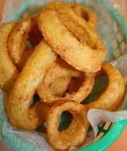

Onion Rings

Ingredients
- 2 large sweet onions, sliced 1/2 inch thick
Batter:
- ⅔ cup buttermilk
- 1 egg
- ¼ cup all-purpose flour
- ½ teaspoon adobo all-purpose seasoning
Breading:
- 2 cups panko bread crumbs
- 1 teaspoon adobo all-purpose seasoning
- 1 teaspoon kosher salt
Steps
- Whisk the batter ingredients together in a shallow bowl. Cover and refrigerate it for 30 minutes
- Combine the breading ingredients together in a seperate shallow bowl
- Remove batter from fridge. Dip onion rings into the batter than into bread crumb mixture, turn to coat, and shake off excess crumbs
- Preheat air fryer to 170 degrees C. Line the air fryer with a parchment paper
- Place the breaded onion rings into air fryer leaving about 1/2-inch space between the slices
- Cook for about 10 to 12 minutes, flipping halfway through
- Remove from air fryer, transfer to a plate and sprinkle with kosher salt